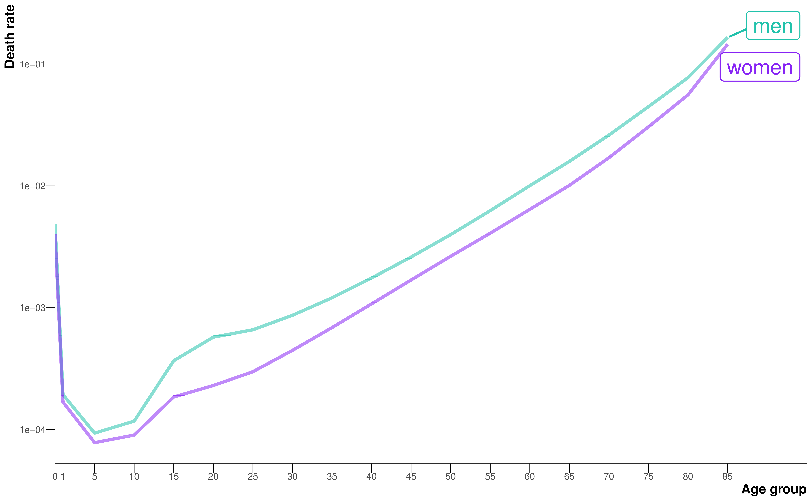
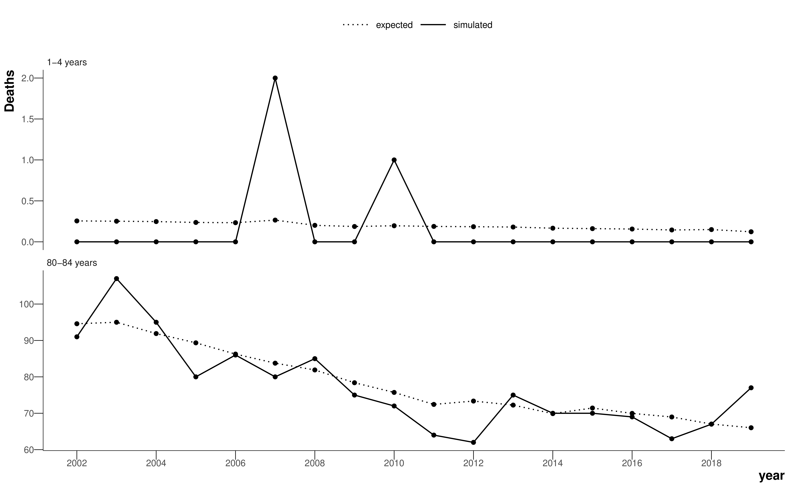

3 Counting and modelling the dead
3.1 Overview
This chapter presents the datasets, data cleaning, and modelling choices that are common between the proceeding analysis chapters.
3.2 Counts of the dead
This thesis is primarily concerned with modelling death rates for small areas in England. This requires two data sources: counts of deaths, and populations counts. The counts of deaths come from de-identified civil registration data for all deaths in England from 2002 to 2019. In other words, every death in England from 2002 to 2019.
The data is extracted from the Office for National Statistics (ONS) database and held by SAHSU in a secure environment as individual death records are identifiable data. The data are updated every year and are mostly complete for previous years, but a handful of deaths are registered in later extracts if the ONS have been waiting on coroner’s report to identify the underlying cause of death.
Each record comes with information on postcode of residence, allowing us to assign each death into a spatial unit for analysis. For each analysis, deaths were stratified into the following age groups: 0, 1–4, 5–9, 10–14, then 5-year age groups up to 80–84, and 85 years and older. There are also a series of ICD-10 (International Classification of Diseases, Tenth Revision) codes from the death certificate associated with the underlying and contributory causes leading to the death. Here, I focus only on the underlying cause of death, which has been assigned using selection algorithms to improve consistency between doctors (Office for National Statistics, 2022a).
Before fitting any models, it’s good practice to explore the data visually, in this case looking at how total mortality varies over different cross sections: sex, age, space, time.

The general age pattern, after aggregating all years and separating into age groups, follows a J-shape curve, with raised infant and older age mortality (Figure 3.1). Male mortality is higher at all ages, but particularly in young adulthood (15-29 years) due to injuries resulting from risky behaviour.
Figure 3.2 looks at the trends over time for wider age groups. I did not use the 5-year age groups because the number of deaths for certain age groups at single years were small, and any data presented should be non-disclosive in accordance with SAHSU’s data sharing agreement. In general, death rates have decreased from 2002 to 2019 in all age groups, but with slowing progress in young adulthood and working ages (30-69 years). Likewise, life expectancy has improved throughout the study period, but has stalled since around 2010 for both sexes.

Figure 3.3 shows the geography of life expectancy after aggregating deaths over the entire study period by district. For both sexes, the picture is similar: pockets of low life expectancy in the urban northwest, northeast, west midlands, and coastal areas east of London.
Here, I have taken slices across each dimension, but the aim in the following chapters is to calculate death rates for each sex-age-space-time stratum.
3.2.1 Geographies of England
Having already introduced the term “district” in Figure 3.3, I’ll set out the lay of the land in terms of geographies used in this thesis. This thesis is concerned only with England, as Scotland, Wales, and Northern Ireland each have their own separate deprivation data which are not comparable. The geographies in England form a nested hierarchy of spatial units from regions to districts to Middle-layer Super Output Areas (MSOAs) to Lower-layer Super Output Areas (LSOAs). The number of units for each geography are summarised in Table 3.1.
| Geography | Number of units | Median (5th - 95th percentile) population in 2019 |
|---|---|---|
| region | 9 | 5,934,037 (3,536,336-9,092,877) |
| district | 314 | 140,271 (68,238-380,483) |
| MSOA | 6791 | 7985 (5760–11,917) |
| LSOA | 32844 | 1620 (1235-2468) |
England is divided into 9 regions (London, North West, West Midlands, etc). Within these regions, there are 314 local authority districts. Districts are administrative geographies formed from a mixture of London boroughs, metropolitan and non-metropolitan districts, and unitary authorities. They are responsible for local policies, and are therefore subject to local government restructuring and boundary changes. To ensure geographic consistency, all data were mapped to the district boundaries from 2020.
Output Areas (OAs) are the smallest building block for spatial census statistics, with between 40 and 250 households and typically 100 to 625 people, and are designed to have some socioeconomic homogeneity. LSOAs are a type of census geography made up of around four or five OAs. MSOAs are then comprised of around four or five LSOAs, and these MSOAs fit within district boundaries. OAs, LSOAs, and MSOAs are all statistical units are designed by the ONS purely for analysis purposes, so researchers can use spatial units with similar, but small, population sizes. No policies are created using these boundaries (Office for National Statistics, 2022b). Again, for geographic consistency, all data were mapped to the output area hierarchy from the 2011 census.
3.2.2 Counts of the living
This second data sources we require are populations counts. These are taken from mid-year population estimates of the usual resident population by the ONS (Office for National Statistics, 2021a, 2021b). The ONS estimates inter-censal populations on a rolling basis, updating the previous year’s value using the change in the population in the GP patient registration data as an indicator of the true population change. The LSOA populations are fully consistent with estimates for higher levels in the nested geographical hierarchical including MSOAs, districts, regions and the national total for England (Office for National Statistics, 2021c).
3.2.3 Deprivation data
I used data for the following measures of socioeconomic deprivation from the English Indices of Deprivation:
- Income deprivation (also referred to as poverty). The proportion of the geographical population claiming income-related benefits due to being out of work or having low earnings.
- Employment deprivation (also referred to as unemployment). The proportion of the relevant population of the geography involuntarily excluded from the labour market due to unemployment, sickness or disability, or caring responsibilities.
- Education, skills and training deprivation (also referred to as low education). Lack of attainment and skills, including education attainment levels, school attendance, and language proficiency indicators in the geographical population.
The above measures are the three largest contributors to the Index of Multiple Deprivation (IMD), excluding a domain on health that also uses mortality data. The data are produced at the LSOA level (Ministry of Housing, Communities & Local Government, 2019).
IMD data are not available for every year. The analysis period for the thesis is 2002 to 2019, so I used data for these measures for 2004, as data for 2002 were not available, and 2019. The 2004 data on deprivation domains were reported for LSOA boundaries from the 2001 census. I mapped these data to the 2011 census LSOA boundaries by assigning the 2001 LSOA score to all postcodes contained within it, then overlaying the 2011 LSOA boundaries, and averaging the score for all constituent postcodes of each LSOA, to obtain the corresponding score for each 2011 LSOA.
The definition of the indicators can change over time. Further, the indicator used for measuring education, skills and training deprivation (low education) is not directly interpretable because it combines multiple concepts and cannot be simply expressed as a proportion of the population. Therefore, I used ranking rather than scores so that comparisons can be made not only across spatial units in a single year, but also across the different years.
The deprivation data for geographies larger than LSOAs in Table 3.1 were created by ranking the population-weighted average of scores for all constituent LSOAs, as done previously for districts (Ministry of Housing, Communities & Local Government, 2019).
3.2.4 Migration data
I also used estimates of population turnover, defined as the proportion of households in each LSOA in 2019 who were different from those who had lived there in 2002, from the Consumer Data Research Centre. The Consumer Data Research Centre estimates these proportions by using the names of households members, individually and in combination, and addresses and dates of records from electoral and consumer registers and land registry sales data (van Dijk et al., 2021). Estimates of population turnover for MSOAs were created by taking the mean across all constituent LSOAs (Ministry of Housing, Communities & Local Government, 2019).
3.3 Modelling the dead
For each chapter, the quantity of interest is the same: mortality in each age group, spatial unit and year. Empirically, death rates can be calculated from observed data as the number of deaths divided by the population in each strata. Formally, using \(a\), \(s\), and \(t\) to index age, spatial unit and time respectively, we write \[ \hat{m}_{ast} = \frac{\text{deaths}_{ast}}{\text{population}_{ast}}, \tag{3.1}\] where \(\hat{m}_{ast}\) is the death rate.
When the number of deaths becomes small, however, the empirical death rate presents an apparent variability from year to year, or from spatial unit to spatial unit, which is larger than the true differences in the risk of death. The problem is exacerbated for the young ages or rare diseases, where the number of deaths might be zero, or for smaller geographical units, where the population might be zero. As a demonstration, Figure 3.4 shows the expected and simulated number of deaths for a young age group (1-4 years) and an old age group (80-84). The simulation assumes the hypothetical spatial unit has a population of 1000 in each age group in each year, and generates deaths using a Poisson distribution and the national age-specific death rates for each year. Note, given the population sizes in Table 3.1, the true age-specific populations for LSOAs and MSOAs will be smaller and there will be even more zeros and even more noise in the number of deaths than in this simulation. Although there are a large number of deaths in the older age group and it is easy to visualise a curve that fits the data, the death counts for the young age group are extremely sparse and it is difficult to estimate the true underlying death rate. In this thesis, I have used Bayesian hierarchical models to obtain stable estimates of death rates by sharing information across age groups, spatial units, and years. An added advantage of the Bayesian paradigm is the robust estimation of error.

This is a regression task. We want to smooth over the data – the models aren’t being used for prediction. I tried to design a model that captures as much of the true variation in the data as possible using epidemiological knowledge to choose plausible effects. In other words, the model is “full”, with enough parameters to capture all the true variability. The downside of this approach is that models with more parameters are harder to fit, whereas models with fewer parameters, or parsimonious models, make Bayesian inference easier but can mask some of the variance.
3.4 Inference
The decision was made early in the PhD to use Markov chain Monte Carlo (MCMC) sampling methods for inference, as this is the “gold standard” with guarantees that the sequence of samples will asymptotically converge to the true posterior. Furthermore, the state-of-the-art approximate inference package for spatial models, INLA, scales badly with the number of hyperparameters, and hence would struggle with the high dimensionality of the models in this thesis.
Bayesian models are specified in a probabilistic programming language. The starting point for this project was the NIMBLE package (de Valpine et al., 2022, 2017). NIMBLE uses the BUGS (“Bayesian inference Using Gibbs Sampling”) syntax for defining a hierarchical model, which my research group has a lot of experience with, as WinBUGS, one of the earliest software packages for Bayesian analysis, was developed largely in the department for use on SAHSU studies. NIMBLE has an R interface but compiles models to C++ for speed and scalability. It also increases the sampling efficiency by automatically finding conjugate relationships between parameters in the model and marginalising over them wherever possible. The group also has a close relationship with the lead developer of NIMBLE.
Nevertheless, Bayesian inference is difficult to scale, and some of the models in this thesis had in excess of \(10^6\) parameters and took NIMBLE between 10 and 14 days to collect enough posterior samples. One of the main issues with NIMBLE was that the vast majority of the parameters in the model could not exploit efficient conjugate samplers, and instead used variants of basic Metropolis-Hastings samplers, which, despite numerous efforts at tuning, were inefficient. Although NIMBLE could execute a reasonable number of samples per second, the MCMC chains were struggling to explore the posterior efficiently so the effective sample size per second was low. This is a common problem in spatial and spatiotemporal models, where the parameters are correlated by design. To overcome these mixing issues, the chains had to be run for longer and thinned (i.e. take every \(n^{\text{th}}\) sample so the Markov chain samples are closer to independent, which is better for computational reasons than storing a large number of correlated samples).
I spent a lot of time trying different probabilistic programming languages across R, python and Julia, in particular packages that implemented the more efficient No U-Turn Sampler (NUTS) (Rashid, 2022). In the end, I settled on NumPyro (Phan et al., 2019) because it was the fastest and inference could be performed on a GPU, rather than CPUs, which is faster for large models (Lao et al., 2020). The major downside was that NumPyro had not been used extensively by the spatial modelling community, so I had to implement the CAR distribution from Equation 2.2 myself, which has since been contributed to the source code (NumPyro documentation, 2023). Rewriting the model in NumPyro and sampling on a GPU cut the runtime down to around a day. NumPyro also has built-in methods for approximate variational inference, such as the Laplace approximation, but these failed to converge to sensible values for these models without heavy customisation of variational function, so I stuck with sampling methods.
3.5 Clean code and open source
I am strong believer in open source science, and I have put a lot of attention into open sourcing code for all analyses during the PhD. With open science, not only do we facilitate the scientific method as our process and results are transparent, but we also allow future researchers to reuse and build on our models easily. It can also generate interest from researchers in different fields using similar models and from developers looking to challenge their software on complicated research questions, both of which I have seen first-hand during the course of my studies. The code is clean, version-controlled and follows best practices for scientific software engineering. As well as code contributed to open source projects along the way, the code for statistical models, plots and analysis, and the thesis itself can be found on GitHub.